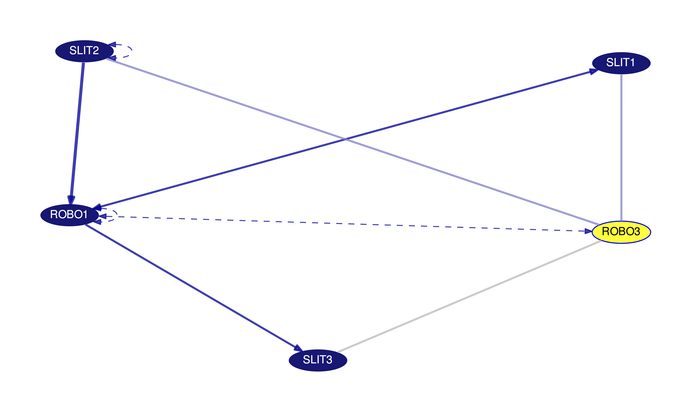
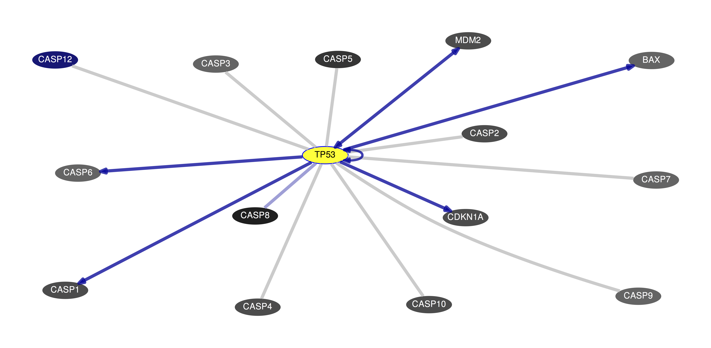
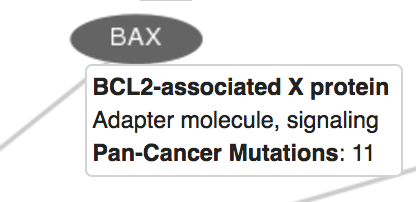
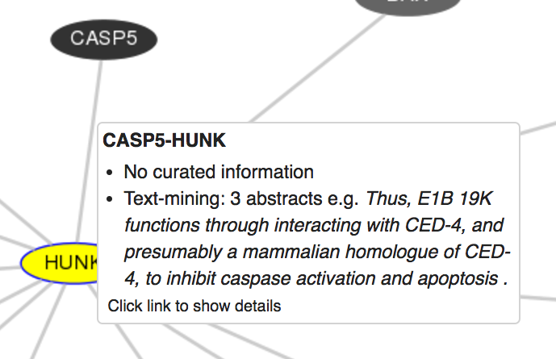
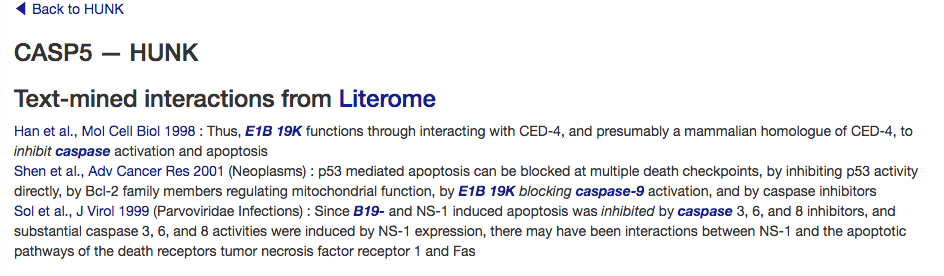
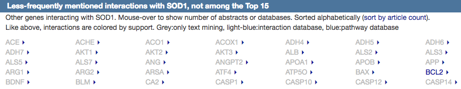

The Pathways and Gene Interactions graph accompanies the "Gene Interactions" track and displays a detailed gene interaction and pathway graph based on data collected from two sources: curated pathway/protein-interaction databases and interactions found through text mining of PubMed abstracts.
The curated data were imported from 23 pathway or protein-interaction databases (see the Methods section below). Curators at these databases typically read research articles, collect protein interactions from them and store them in a web-accessible database. Pathway databases such as Reactome or WikiPathways describe a whole set of interactions, e.g. the WNT pathway, and the type of effect, and sometimes annotate indirect or inferred effects as an interaction. They often work from review articles. In contrast, protein interaction databases focus more on the original literature that describes the results of the biochemical assay and focus less on the effect or direction of the interaction.
The text mining data was generated in collaboration with the Microsoft Research Project Hanover Team using Literome machine-reading. Literome is a natural-language processing (NLP) system that analyzes sentences and tries to extract names of proteins and the type of interaction. A simple example is a sentence such as, "PTEN negatively regulates AKT3", which gets transformed to "PTEN-AKT3" and "regulation: negative". The text mining system was run on all 20 million PubMed abstracts at the end of 2014 and can also be queried through the website Literome.
Clicking on an item in the track display takes you to a page that includes a gene interaction graph with detailed information on the directionality and support for the various interactions displayed. The graph is initially centered on the gene clicked in the track display, with this gene highlighted in yellow. For example, you can see that the primary gene "SOD1" is highlighted in yellow in this image:
By default, only the top 25 best-supported interactions are displayed, but this number can be increased, decreased or filtered using the controls above the image. The interaction display can be filtered using the drop-down menu to display subsets by their support:
Genes in the interaction graph are connected by a number of different line types, with each type of line and the line properties themselves indicating different levels of support from text mining and databases.
Here you can see nearly all of the different types of lines in a single gene interaction graph centered around the ROBO3 gene:

Lines may include arrows showing the directionality of this interaction. In these cases, the directionality is determined by majority support. For example, imagine an interaction between protein A and protein B; two articles support that A acts on B while a single article supports the opposite, B acting on A. In this case, because there are more articles supporting A acting on B, then the arrow will be drawn such that it starts at A and points to B.
From the "Annotate Genes" drop-down, you can annotate genes based on GNF2 average expression, drugability from DrugBank entries, cancer type in the COSMIC Cancer Gene Census, and the number of non-silent mutations identified by the PanCancer analysis project. For the GNF2 expression and PanCancer Mutation coloring, genes will be colored on a sliding scale from light grey to black, with those items with the highest expression or the largest number of non-silent mutations being colored the darkest and those with lower expression or fewer mutations being colored grey. Genes will be colored dark blue if there is no information in the database. In this image, you can see a set of 14 genes that interact with TP53 colored by their PanCancer Mutation number:

You can mouse-over items in the display to show more details about the gene such as their product. If you've chosen to annotate genes with one of the various databases, then it will display that information as well. For instance, hovering over the BAX gene in this example displays a description of the gene product as wells as the number of Pan-Cancer mutations since that option is selected:

You can mouse-over the connecting lines between genes to see more details about the evidence that supports this connection. In this image, you can see the details that pop-up when you mouse over such a line; information displayed includes database support and text-mining support.

If you click on the line connecting two proteins, you can see a SumBasic-selected snippet of text from a Pubmed abstract and, if it is a curated interaction, the supporting information from the pathway or interaction databases. This example shows the text-mined support for an interaction between CASP5 and HUNK:

Below the graph of gene interactions and pathways, there is table of less-supported interactions. These are interactions which were mentioned only a few times each in the literature.

The numbers shown on mouse-over for each interaction represents the number of articles and number of databases that support this interaction.
You can export the currently displayed gene interaction graph in a variety of formats including PDF, SVG, Cytoscape, and JSON.
The gene interaction graph can be recentered around a new gene in a few different ways: (1) clicking a gene in the existing interaction graph, (2) clicking the triangle next to a gene in the table of minor interactions below the graph, (3) searching for a gene name in the search box above the graph.
Human protein interactions from the following databases were imported:
The quantitative contribution of each database in terms of number of gene-pairs is available here.
For text mining, PubMed abstracts were downloaded from the National Library of Medicine (NLM) website. The abstracts were then tokenized and parsed syntactically using the SPLAT toolkit. Protein and Gene names were identified and normalized after which potential interactions were extracted using the Microsoft Research NLP "Protein and Pathway Extractors". The results were then mapped to the genome using their HGNC gene symbols. Text-mining results supporting by only a single abstract are in the database tables but are not shown in the user interface.
The raw data for these graphs can be accessed in multiple ways. They can be explored interactively using the Table Browser, by selecting "group" - "All Tables" and "database" - "hgFixed". Under "table", select "hgFixed.ggLink". You can then start to explore the relationships between the database tables using the "data format description" button or download tables with "get output". All database tables related to this viewer start with the prefix "gg".
The database tables can also be accessed programmatically through our public MariaDB server or downloaded from our downloads server for local processing. The database tables are:
For more details about the tables and their fields, use the Table Browser's "describe schema" button.
The annotations (GNF2 average expression, DrugBank, etc.) for genes are accessed as text files for performance reasons and can be downloaded from our downloads server.
Poon H, Quirk C, DeZiel C, Heckerman D. Literome: PubMed-scale genomic knowledge base in the cloud Bioinformatics. 2014 Oct;30(19):2840-2. PMID: 24939151